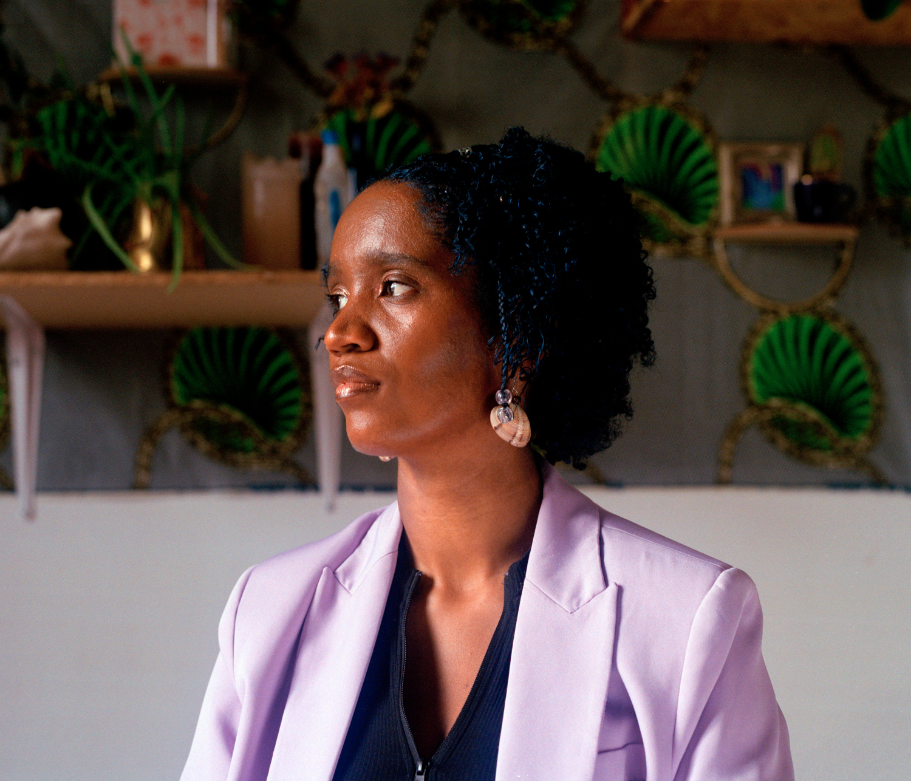
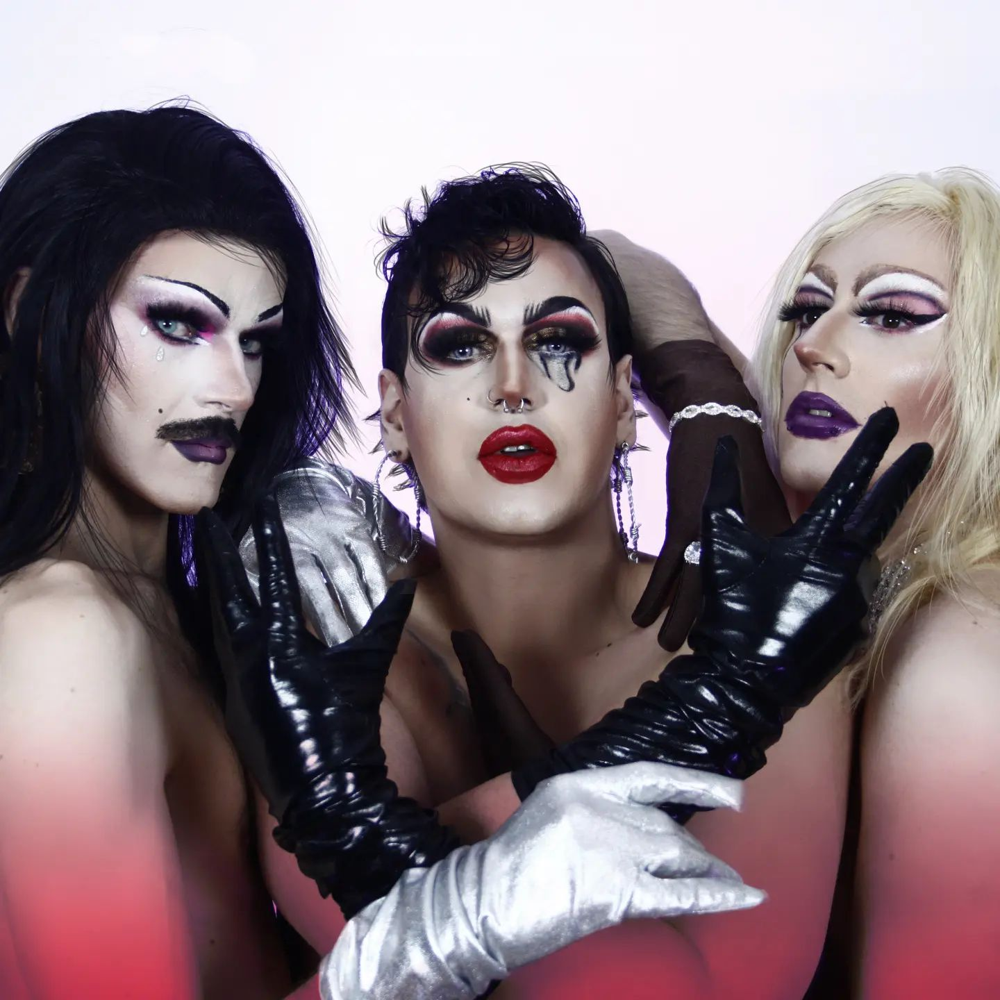

Les couleurs sont à l'honneur ! Prépare ta tenue la plus teintée et rejoins-nous le samedi 3 juin
à
partir de 19h à l'Hôtel de Ville de Lyon pour une soirée dansante mémorable !
Si vous ne pouvez pas venir alors que vous avez déjà
réservé votre place, contactez-nous par
mail afin que nous puissions réattribuer la place à un-e
autre chanceux-se.
Vous avez dit Bal des Fiertés ?
Le temps d'une soirée, l'Hôtel de Ville de Lyon accueille le Bal le plus coloré de l'année !
Au programme : concert dansant, repas vegétarien local, village associatif, espace
chill et espace
prévention !
Le Bal est un évènement inclusif, gratuit et ouvert à toustes, sans distinction. L'inscription est
obligatoire. N'oubliez pas de
réserver votre place, c'est gratuit !
Les artistes
A travers ce Bal, nous tenons à mettre en avant des artistes Queer, locaux et peu connus du grand
public. Découvrez les quatre artistes qui vous feront danser pendant cette soirée !
Pensez à consulter leurs réseaux sociaux !
Centuries
Pop, Rock, Funk
Centuries est un jeune groupe d'étudiant-e-s de l'INSA au talent
plus que prometteur. Leurs reprises sauront animer la soirée et vous faire danser jusqu'au
bout de la nuit !
Coeur
Trap Romantique Hyperpop
Cœur célèbre le paradoxe et la créativité. Voix crunchy, charnelle
et joueuse, elle fait vivre une musique poétique qui
refuse de choisir entre violence et douceur, entre force et fragilité. Artiste, auteure et
chanteuse, Cœur provoque autant qu'elle charme.

DJ Pompompom
Afro, Latino, classiques 90/2000
Un voyage spatial et temporel entre les différents styles qui ont
vu grandir DJ Pompompom : du reggaeton portoricain à l'afrobeat nigérian en passant
évidemment par les rythmes du Cap-Vert, le tout avec une touche de nostalgie.

Les Pleureuses
Drag, Lip Sync, Chant
Un quatuor de créatures flamboyantes composé de Edeha Noire,
Foutrine, Baby Gamma et Catherine Baise-en-ville, venant probablement d'une région
intergalactique obscure, humide et douteuse... Préparez vos éventails et vos mouchoirs,
parce qu'elles vont vous faire voyager dans le monde tumultueux des émotions.
La restauration
Découvrez le buffet préparé avec amour par nos bénévoles. Pour 5 euros, vous avez accès à une
assiette végétarienne et locale à composer. Les boissons sont gratuites pour toustes, et sans
alcool !
Le Menu
~ Légumes crus ~
Bâtonnets de carottes et de concombres, tomates cerises, radis
~ Sauces ~
Tsatziki, houmous et sauce salsa
~ Accompagnement ~
Pain et chips
~ Fruits ~
Fraise, melon, pèche et pastèque
~ Cakes ~
Cake au yaourt et cake au chocolat
~ Boissons ~
Cocktails sans alcools
Une action de prévention
Le Bal des Fiertés, c'est aussi une grande action de prévention. Nous avons à coeur de faire
du Bal
un
endroit accessible et sûr pour toutes et tous.
Les associations de prévention seront présentes pour répondre à toutes
vos questions concernant la santé mentale et sexuelle, les discriminations, et
distribuer gratuitement du matériel de prévention (préservatifs, lubrifiant, digues
buccales,
etc).
Les repas sont végétariens et toutes les boissons servies sont sans
alcool. Les boissons sont gratuites.
Les boissons seront servies avec des protections de verres et des pailles
réutilisables.
Toutes les photos prises lors du bal seront traitées afin d'éviter l'outing public.
Le Bal est accessible aux personnes à mobilité réduite.
Espace chill
Vous avez envie de profiter du Bal, mais vous aimez aussi le calme et la sérénité ? Pas de panique,
un espace calme et loin du concert sera à votre disposition !
Jeux de société, stand photo et espace prévention, tout sera prévu pour un bal plus
chill.
Des protections auditives seront également mises à disposition aux stands prévention.
Informations pratiques
Entrée
Les billets seront controlés et les tickets repas vous seront restitués à l'entrée.
Un vestiaire sera à disposition gratuitement.
Accès
Hôtel de Ville de Lyon, 1 Pl. de la Comédie, 69001 Lyon